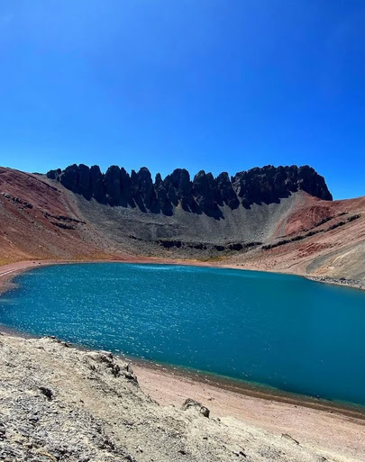
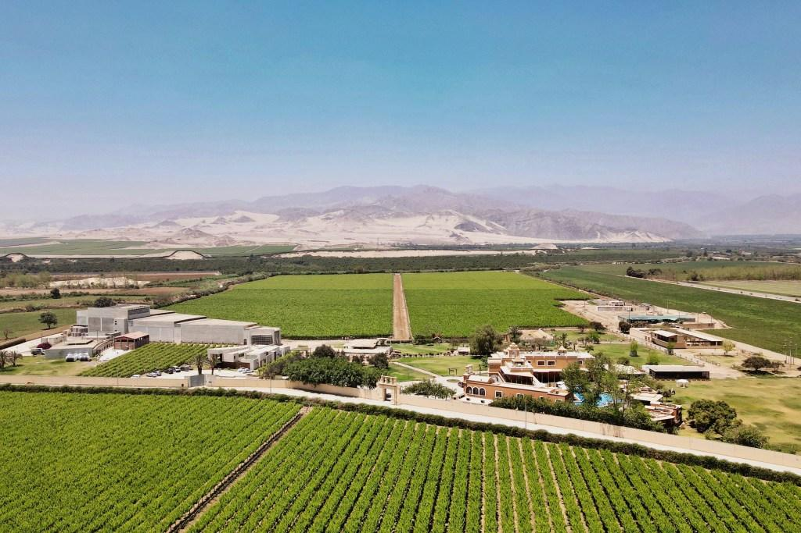
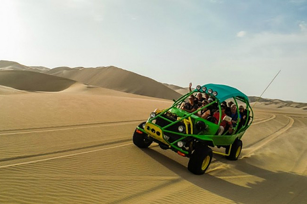
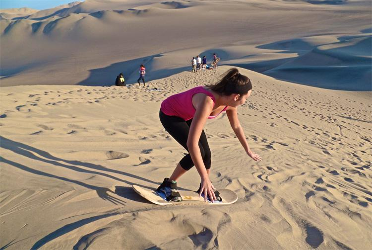

📍 Vichaycocha, Lima
Escápate de la rutina y vive un día lleno de naturaleza marina, paisajes desérticos y adrenalina.
Un día que une el paisaje marino de Paracas con la aventura de las dunas de Ica, el sandboarding y la visita a viñedos y bodegas.

La Reserva Nacional de Paracas guarda las Islas Ballestas, conocidas como las "Galápagos peruanas" por su gran concentración de lobos marinos, pingüinos de Humboldt y aves guaneras.
A poco más de una hora, Ica sorprende con el oasis de Huacachina rodeado de dunas gigantes, ideales para el sandboarding y los carros tubulares, y con viñedos que dan vida al pisco y al vino peruano. Un día que combina naturaleza marina, adrenalina en el desierto y tradición vitivinícola.
Del mar de Paracas a las dunas de Ica en un mismo día.

Paseo en deslizador entre lobos marinos y aves guaneras.

Paisajes desérticos junto al océano Pacífico.

El oasis rodeado de dunas gigantes en pleno desierto de Ica.

Visita a bodegas donde se elabora el pisco y el vino de Ica.
Salida en la madrugada desde Lima. Llega 15 minutos antes de la hora indicada.
Todo lo que debes saber antes de tu tour a Paracas + Ica.
Es un full day con salidas los sábados y feriados. Salimos de madrugada desde Lima, así que aprovechas todo el día. Las fechas exactas las confirmamos por WhatsApp.
Paseo en deslizador a las Islas Ballestas, carros tubulares y sandboarding en las dunas, además de la Reserva Nacional de Paracas, Huacachina y viñedos y bodegas. Todo con guía oficial de turismo.
Incluye transporte turístico privado, paseo en deslizador, carros tubulares, sandboarding, guía oficial, fotos y videos y botiquín de primeros auxilios. No incluye desayuno, almuerzo ni gastos personales.
Plaza Norte (4:00 a. m.) o Puente Nuevo (4:30 a. m.). Llega 15 minutos antes de la hora indicada. Otros puntos pueden coordinarse mientras la movilidad se encuentre en ruta.
Ropa cómoda y fresca, una casaca ligera para la mañana en el mar, bloqueador solar, lentes de sol, gorro, agua y efectivo para tus comidas. Para el sandboarding conviene ropa que pueda ensuciarse con arena.
Escríbenos por WhatsApp al 923 118 811 o usa el botón "Reservar ahora" de esta página para confirmar disponibilidad y separar tu cupo. Con solo S/ 50 de adelanto aseguras tu lugar y el saldo se cancela antes de la salida.



